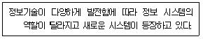
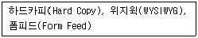
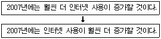
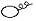
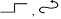
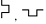

워드프로세서-2급(폐지) (2007-07-29 기출문제)
1과목: 워드프로세서 용어 및 기능
1. 다음 보기의 예는 문자에 어떤 속성을 지정한 것인가?
- 역상, 기울임(Italic), 진하게(Bold)
- 역상, 음영, 기울임(Italic)
- 음영, 기울임(Italic), 진하게(Bold)
- 음영, 위 첨자, 진하게(Bold)
(정답률: 81%)

2. 다음 중 KS X 10⑤-1 유니코드에 대한 설명으로 옳은 것은?
- 국제 표준과의 불일치 문제점이 있다.
- 완성형이나 조합형에 비해 기억 공간을 많이 차지한다.
- 외국 소프트웨어와의 충돌이 있다.
- 초성, 중성, 종성에 코드 값을 각각 부여하므로 복잡하다.
(정답률: 75%)
3. 다음 중 워드프로세서의 글자모양에 대한 설명으로 옳지 않은 것은?
- 일반적으로 글자 크기의 단위는 ‘포인트(Point)’ 이다.
- ‘자간’이란 글자와 글자 사이의 간격을 말한다.
- ‘글자속성’이란 글자에 적용된 진하게, 글자색, 밑줄, 그림자 등을 말한다.
- ‘장평’이란 문단과 문단 사이의 간격을 말한다.
(정답률: 78%)
4. 다음 중 플라즈마(PDP)표시 장치에 대한 설명으로 옳지 않은 것은?
- 표시 속도가 빠르며 눈의 피로가 적다.
- CRT에 비해 부피가 작고 가볍다.
- 해상도가 뛰어나 그래픽 처리에 적합하다.
- LCD에 비해 가격은 고가이나 소비전력이 적다.
(정답률: 72%)
5. 다음 중 문서의 성립 및 효력 발생에 관한 설명으로 옳지 않은 것은?
- 문서는 당해 문서에 대한 결재권자의 결재가 있음으로써 성립한다.
- 결재권자의 결재에 있어서 전자서명은 포함되지 않는다.
- 문서는 수신자에게 도달됨으로써 효력이 발생한다.
- 문서는 직접 처리하여야 할 행정기관에 발신한다.
(정답률: 77%)
6. 다음 중 공문서 작성시 본문에 포함되지 않는 것은?
- 제목
- 내용
- 붙임
- 발신명의
(정답률: 77%)
7. 다음 중 클립보드를 이용한 작업에 대한 설명으로 옳지 않은 것은?
- 클립보드는 어플리케이션 혹은 문서간의 데이터 교환을 위한 중간적인 매개 역할을 수행한다.
- 복사하거나 잘라내기 하여 다른 곳에 붙이는 경우 원래의 문서에는 아무런 변화가 생기지 않는다.
- [PrtScr] 키를 눌러 화면 전체를 캡쳐하여 클립보드에 저장한 후 특정 문서에 붙여 넣을 수 있다.
- 스프레드시트나 그래픽 프로그램에서 클립보드에 저장한 내용을 특정 워드프로세서 문서에 붙여 넣을 수 있다.
(정답률: 64%)
8. 다음 중 문서 작성시 탭(Tab)기능을 사용하는 것이 가장 효율적인 경우는?
- 일정한 간격으로 사이를 띄울 경우
- 특수한 문자를 입력할 경우
- 수학식이나 화학식을 입력해야 할 경우
- 동일한 문자를 반복하여 입력할 경우
(정답률: 88%)
9. 다음 중 문서 작성시 한자를 입력하려고 하는데 음을 모를 경우 사용할 수 있는 변환 방법으로 가장 적절한 것은?
- 음절 단위 변환
- 부수 입력 변환
- 단어 단위 변환
- 문장 자동 변환
(정답률: 81%)
10. 결재권자가 휴가 ㆍ 출장 기타의 사유로 결재권자 사정에 의하여 결재할 수 없을 때에 그 직무를 대리하는 자가 행하는 결재를 무엇이라고 하는가?
- 전결
- 대결
- 사후보고
- 선람
(정답률: 87%)
11. 문서 작성시 학교이름을 치고 한자 변환을 했더니 원하지 않는 다른 한자로 바뀌었다. 다음 중 이와 같이 특정 단어를 한자 단어로 자주 사용할 경우 가장 효율적인 방법은?
- 그냥 한 글자씩 입력받는다.
- 상용구에 한글로 학교이름을 등록한다.
- 한자사전에 새 단어로 학교이름을 등록한다.
- 한자사전에 있는 해당 단어를 모두 지운다.
(정답률: 72%)
12. 다음 중 설명이 옳지 않은 것은?
- ‘DPI’란 1인치당 인쇄되는 점의 수를 나타내는 것으로 인쇄 밀도의 단위이다.
- ‘LPM’이란 1분당 인쇄하는 행의 수를 의미한다.
- ‘LPI’란 1인치당 인쇄되는 줄의 수를 의미한다.
- ‘MIPS’란 1초 동안에 처리되는 인쇄 장치의 처리 속도이다.
(정답률: 57%)
13. 다음 중 확장자가 BAK인 백업 파일에 대한 설명으로 옳은 것은?
- 워드프로세서 프로그램을 작성하는 언어를 의미한다.
- 워드프로세서와 다른 프로그램을 연결할 때 반드시 사용되는 파일이다.
- 워드프로세서의 특수 기능인 수식을 편집할 때 사용되는 파일이다.
- 워드프로세서를 사용할 때 원본 파일이 삭제되거나 파괴되었을 때 복구를 위해 사용되는 파일이다.
(정답률: 84%)
14. 다음 중 스풀(SPOOL)에 대한 설명으로 옳은 것은?
- 문서를 인쇄하는 도중에 다른 작업을 할 수 있도록 하는 기능이다.
- 주기억장치와 출력장치간의 속도 차를 해결하기 위한 방법이다.
- 출력한 자료를 주기억장치에 저장하였다가 프린터가 출력 가능한 시기에 출력시킨다.
- 마지막에 저장한 자료만 유효하다.
(정답률: 73%)
15. 다음 중 문서에서 영문을 입력할 때 줄의 마지막에서 단어가 끝나지 않고 다음 줄의 처음으로 연결되는 경우 자동으로 이 단어를 다음 줄의 처음으로 옮겨주는 기능을 무엇이라고 하는가?
- 래그드(Ragged)
- 정렬(Align)
- 워드랩(Word Wrap)
- 강제개행(Hardware Return)
(정답률: 76%)
16. 다음 보기의 문장에서 적용되고 있는 문단 기능으로 가장 적합한 것은?

- 머리말
- 들여 쓰기(Indent)
- 내어 쓰기(Outdent)
- 우측 정렬
(정답률: 80%)
17. 다음 중 용지 규격을 가장 큰 용지부터 작은 용지 순서대로 올바르게 나열한 것은?
- B4 - A4 - B5 - A5
- A4 - B4 - A5 - B5
- A4 - A5 - B4 - B5
- B4 - B5 - A4 - A5
(정답률: 83%)
18. 다음 보기의 용어들과 가장 관련이 깊은 것은?

- 입력 기능
- 저장 기능
- 편집 기능
- 인쇄 기능
(정답률: 82%)
19. 다음의 보기와 같이 문장의 내용을 수정하고자 할 때 사용될 교정부호는?


(정답률: 89%)
20. 다음 중 서로 상반되는 의미를 나타내는 교정부호끼리 올바르게 짝지어진 것은?


(정답률: 90%)
2과목: PC 운영 체제
21. 한글 Windows XP의 [제어판]에 있는 [내게 필요한 옵션]을 이용하여 설정할 수 없는 작업은?
- 키보드의 숫자 키패드로 마우스 포인터를 제어하도록 설정할 수 있다.
- 왼손잡이를 위한 마우스를 설정할 수 있다.
- [Caps Lock], [Num Lock], [Scroll Lock] 키를 누를 때 신호음이 발생되도록 설정할 수 있다.
- 빠르게 반복되는 키의 입력을 무시하고 키의 반복 속도를 느리게 설정할 수 있다.
(정답률: 58%)
22. 한글 Windows XP에서 네트워크에 연결되어 있는 컴퓨터의 IP 주소를 확인하는 방법으로 옳은 것은?
- [명령 프롬프트] 창에서 ‘ipconfig’라는 명령어를 실행시킨다.
- [인터넷 익스플로러]를 실행시킨 창에서 [도구] 메뉴의 [인터넷 옵션]을 선택한다.
- [탐색기] 창에서 [도구] 메뉴의 [폴더 옵션]을 선택한다.
- [네트워크 연결] 창에서 [보기] 메뉴의 [새로고침]을 선택한다
(정답률: 56%)
23. 다음 중 한글 Windows XP에서 파일의 확장자명에 대한 설명으로 옳지 않은 것은?
- 파일의 특징과 형식을 구분할 수 있는 표시이다.
- 파일명과 마찬가지로 대/소문자는 구분할 필요가 없다.
- 자동 연결 기능에 의해 실행되는 프로그램을 결정하는 요소가 된다.
- 같은 폴더 안에 확장자명이 같은 파일이 존재하면 안 된다.
(정답률: 63%)
24. 다음 중 한글 Windows XP에서 프린터의 사용에 관한 설명으로 옳은 것은?
- 프린터는 네트워크를 통해 공유될 수 없다.
- 다른 주변 장치와 같이 프린터는 개별적인 이름을 붙일 수 없다.
- [프린터 및 팩스] 창에 있는 프린터의 아이콘은 이동할 수 없다.
- 일단 인쇄중인 문서는 정지나 작업 종료를 할 수 없다.
(정답률: 53%)
25. 다음 중 한글 Windows XP에서 시스템에 해를 끼칠 수 있는 변경 사항을 취소하여 작업한 내용을 손상시키지 않고 이전 시점으로 시스템을 되돌리는 시스템 도구는?
- 시스템 백업
- 시스템 복원
- 시스템 회복
- 시스템 정리
(정답률: 81%)
26. 다음 중 한글 Windows XP의 [탐색기] 창에서 현재 폴더에서 상위 폴더로 선택 항목을 이동하는 기능을 제공하는 키는?
- [-] 키
- [Backspace] 키
- [Esc] 키
- [+] 키
(정답률: 68%)
27. 한글 Windows XP에서 일정 시간 동안 아무런 작업을 하지 않을 경우에 절전을 위하여 모니터와 하드디스크를 자동으로 끄는 기능은?
- UPS 기능
- Back Up 기능
- MTU 설정 기능
- OnNow 기능
(정답률: 79%)
28. 다음 중 한글 Windows XP의 [Windows 로그오프] 대화상자에서 선택할 수 있는 항목은?
- 사용자 전환
- 대기 모드
- 끄기
- 다시 시작
(정답률: 76%)
29. 다음 중 한글 Windows XP에서 메인 메모리가 부족한 문제를 해결하는 방법으로 가장 올바르지 않은 것은?
- 시스템을 재시작 한다.
- 실행 중인 불필요한 응용 프로그램을 종료한다.
- 불필요한 램 상주 프로그램을 삭제한다.
- [휴지통 비우기]를 수행한다.
(정답률: 43%)
30. 다음 중 한글 Windows XP에서 클립보드에 관한 설명으로 옳지 않은 것은?
- 작업 도중 복사하거나 이동할 때, 데이터가 잠시 기억되는 임시 장소이다.
- 전원이 꺼지거나 시스템을 다시 시작할 경우에 클립보드의 내용은 삭제된다.
- 하드디스크를 사용하는 일종의 가상 메모리이다.
- 활성화된 창의 이미지를 클립보드에 캡쳐하려면 [Alt] + [PrtSc] 키를 사용한다.
(정답률: 59%)
31. 한글 Windows XP의 [그림판] 프로그램에서 그림의 가로나 세로 크기를 나타내는 규격 단위로 사용될 수 없는 것은?
- 센티미터(Cm)
- 인치(Inch)
- 트윕(Twip)
- 픽셀(Pixel)
(정답률: 60%)
32. 다음 중 한글 Windows XP에서 [시작] 메뉴에 있는 [검색]을 이용하여 검색할 수 없는 것은?
- 연결 프로그램 파일
- 그림, 음악 또는 비디오 관련 파일
- 모든 파일 및 폴더
- 컴퓨터 또는 사람
(정답률: 43%)
33. 다음 중 한글 Windows XP에서 폴더에 관한 설명으로 옳지 않은 것은?
- 폴더 이름으로 공백을 사용할 수 있다.
- 폴더 이름으로 <, >, ?, * 등과 같은 특수문자는 사용할 수 없다.
- 폴더 이름은 확장자를 포함해야 한다.
- 새로운 폴더는 바탕 화면의 바로 가기 메뉴에 있는 [새로 만들기]-[폴더]를 선택하면 만들 수 있다.
(정답률: 55%)
34. 한글 Windows XP의 [탐색기]에서 선택된 파일이나 폴더의 등록정보 창을 보기 위해 사용하는 바로 가기 키는?
- [Alt]+[Enter]
- [Alt]+[Tab]
- [Ctrl]+[Enter]
- [Ctrl]+[Tab]
(정답률: 66%)
35. 다음 중 한글 Windows XP에서 클라이언트가 동적인 IP 주소를 할당받아서 인터넷을 사용하는 방법은?
- DHCP 설정
- WINS 설정
- Router 설정
- Gateway 설정
(정답률: 64%)
36. 다음 중 한글 Windows XP에서 설치되어 있는 응용 프로그램을 정상적으로 제거하는 가장 적절한 방법은?
- 작업 표시줄에 있는 해당 프로그램의 아이콘을 삭제한다.
- [시작]-[모든 프로그램] 항목에서 해당 프로그램을 선택하고 오른쪽 마우스를 클릭하여 [삭제]를 선택한다.
- 바탕 화면에 있는 해당 프로그램의 바로 가기 아이콘을 삭제한다.
- [프로그램 추가/제거] 창에서 해당 프로그램을 선택하고 [변경/제거] 버튼을 눌러서 삭제한다.
(정답률: 76%)
37. 다음 중 한글 Windows XP의 [탐색기] 창에서 할 수 없는 작업은?
- 파일이나 폴더를 다른 폴더로 복사할 수 있다.
- 파일이나 폴더의 이름을 변경할 수 있다.
- 두 개의 서로 다른 텍스트 파일을 하나의 파일로 병합할 수 있다.
- 특정 파일이나 폴더를 압축 폴더 기능을 사용하여 압축시킬 수 있다.
(정답률: 62%)
38. 한글 Windows XP에서 사용자 계정이 ‘wp’일 경우에 바탕 화면에 있는 임의의 폴더를 [시작] 메뉴에 있는 [모든 프로그램] 항목의 하위 메뉴에 추가하는 방법으로 옳은 것은?
- 해당하는 폴더를 ‘C:\Documentes and Settings\wp\시작 메뉴\프로그램’ 폴더로 이동시킨다.
- 해당하는 폴더를 ‘C:\Documentes and Settings\wp\시작 메뉴’ 폴더로 이동시킨다.
- 해당하는 폴더를 ‘C:\Windows\wp\시작 메뉴\프로그램’ 폴더로 이동시킨다.
- 해당하는 폴더를 ‘C:\Windows\wp\시작 메뉴’ 폴더로 이동시킨다.
(정답률: 48%)
39. 한글 Windows XP의 [보조 프로그램]에 있는 [메모장] 프로그램에 관한 설명으로 옳지 않은 것은?
- 인쇄시 용지의 크기나 용지의 방향에 관한 설정이 가능하다.
- 메모장에서 작업한 파일은 텍스트(.TXT)파일로 저장된다.
- OLE 기능을 이용하여 개체를 삽입하는 기능이 있다.
- 편집 중인 문서의 본문에서 특정 문자열을 찾아주는 기능이 있다.
(정답률: 64%)
40. 다음 중 한글 Windows XP에서 USB 포트(Port)에 관한 설명으로 옳지 않은 것은?
- 플러그 앤 플레이 설치를 지원하는 범용 직렬 버스이다.
- 컴퓨터를 종료하거나 다시 시작하지 않아도 장치를 연결하거나 연결을 끊을 수 있다.
- 주변 기기를 최대 127개까지 설치할 수 있다.
- 프린터 등의 장치를 연결할 수 있는 병렬 전용 버스이다.
(정답률: 60%)
3과목: PC 기본 상식
41. 다음 중 하드디스크를 마치 주기억장치인 것처럼 사용하여 주기억장치의 용량을 확대할 수 있는 방법으로, 운영체제의 소프트웨어에 의해 구현되는 것은?
- 캐시 메모리
- 버퍼
- 마스크 롬
- 가상 메모리
(정답률: 66%)
42. 다음 중 일반적인 범용 컴퓨터의 장점과 가장 거리가 먼 것은?
- 기억용량이나 처리 속도 등의 향상이 용이하다.
- 여러 종류의 데이터에 대한 응용력과 융통성이 뛰어나다.
- 기업의 각종 사무처리 업무를 수행할 수 있다.
- 산업용 제어분야에 뛰어나다.
(정답률: 60%)
43. 다음 중 기억장치를 접근 속도가 빠른 것부터 느린 것 순으로 올바르게 나열한 것은?
- 레지스터 → 주기억장치 → 캐시메모리 → 보조기억장치
- 주기억장치 → 레지스터 → 캐시메모리 → 보조기억장치
- 레지스터 → 캐시메모리 → 주기억장치 → 보조기억장치
- 캐시메모리 → 레지스터 → 주기억장치 → 보조기억장치
(정답률: 82%)
44. 다음 중 하드웨어적인 업그레이드로 볼 수 없는 것은?
- 램(RAM)을 512MB에서 1GB로 업그레이드했다.
- 하드디스크의 용량을 80GB에서 160GB로 업그레이드했다.
- 32배속 CD-ROM을 40배속으로 업그레이드했다.
- Windows 98에서 Windows XP로 업그레이드했다.
(정답률: 59%)
45. 다음 중 컴퓨터에서 활용되고 있는 멀티미디어의 특징으로 옳지 않은 것은?
- 디지털화 방식
- 단반향성 통신
- 비선형 구조
- 정보의 통합성
(정답률: 59%)
46. 다음 중 네트워크의 이점이라고 볼 수 없는 것은?
- 주변장치 공유
- 개인 간 통신이 용이
- 데이터 백업이 용이
- 외부의 침입대처에 용이
(정답률: 68%)
47. 기존 전화선을 이용해 주파수가 서로 다른 음성 데이터(저주파)와 디지털 데이터(고주파)를 함께 보내는 방식은?
- MODEM
- CABLE
- ADSL
- ISDN
(정답률: 58%)
48. 무료로 배포되지만 기술적인 도움이나 설명서 혹은 업그레이드를 하여 지속적으로 사용하기 위해서는 일정한 금액을 지불해야 하는 저작권으로 보호되고 있는 소프트웨어를 무엇이라고 하는가?
- 프리웨어(Freeware)
- 셰어웨어(Shareware)
- 펌웨어(Firmware)
- 미들웨어(Middleware)
(정답률: 74%)
49. 다음 중 시스템의 처리 능력 향상을 위해 하나의 컴퓨터에 두 개 이상의 CPU가 메모리와 입출력장치를 공유하여 여러 개의 처리 과정이 동시에 수행되게 하는 프로그램 처리 방식을 무엇이라고 하는가?
- 일괄처리 시스템(Batch Processing System)
- 실시간처리 시스템(Real Time System)
- 다중 프로그래밍 시스템(Multi-Programming System)
- 다중 처리 시스템(Multi-Processing System)
(정답률: 64%)
50. 다음 중 1초 동안에 실행 가능한 부동소수점 연산 횟수를 표시하는 단위는?
- FLOPS
- MIPS
- MHZ
- BPS
(정답률: 52%)
51. 다음 중 초고속 정보통신망을 이용하여 원거리에 있는 사람들과 비디오와 오디오를 통해 회의할 수 있도록 하는 시스템을 무엇이라고 하는가?
- VOD
- RACS
- VCS
- VDT
(정답률: 60%)
52. 다음 중 언제 어디서나 자유롭게 네트워크를 통해서 컴퓨터에 접속할 수 있는 환경을 의미하는 것은?
- 광속 상거래(CALS)
- 제닉스(XENIX)
- 유비쿼터스(Ubiquitous)
- 인트라넷(Intranet)
(정답률: 78%)
53. 다음 중 컴퓨터 범죄의 예방 방법으로 가장 적절하지 않은 것은?
- 서버를 운영하고 있는 경우에는 시스템 침입 방지를 위해 보안 시스템을 설치하고 고급 보안기술을 개발한다.
- 정기적으로 패스워드를 변경하여 사용한다.
- 바이러스 예방 프로그램을 설치하여 사용한다.
- 인터넷에서 무료로 제공되는 프로그램은 가급적 모두 설치하여 실행해 본다.
(정답률: 85%)
54. 다음 중 시간적 간격 없이 양방향 통신이 가능한 통신 방식은?
- 반이중(Half-duplex)방식
- 심플렉스(Simplex)방식
- 전이중(Full-duplex)방식
- 더블 심플렉스(Double Simplex)방식
(정답률: 78%)
55. 다음 중 컴퓨터 바이러스에 대한 대비 방법으로 가장 적절하지 않은 것은?
- 출처가 불분명한 프로그램을 사용하지 않는다.
- 의심스러운 전자메일은 열어보지 않는다.
- 백신 프로그램으로 정기검사를 하여 미리 예방한다.
- 다른 컴퓨터에 침입하는 해킹 방법을 배워 둔다.
(정답률: 89%)
56. 다음 중 디지털 컴퓨터에 대한 설명으로 옳지 않은 것은?
- 속도, 전류 등 연속적인 데이터를 처리하는 컴퓨터이다.
- 산술 및 논리 연산을 처리하는 회로에 기반을 둔 컴퓨터이다.
- 문자나 숫자화된 데이터를 처리하는 컴퓨터이다.
- 명령어들로 구성된 프로그램에 의해 동작한다.
(정답률: 46%)
57. 다음 중 CMOS SETUP의 설정값을 변경해야 할 경우와 가장 거리가 먼 것은?
- 램 추가나 HDD의 사양 변경
- 시스템 정보가 손상된 경우
- 화장 슬롯의 IRQ가 충돌되는 경우
- 모니터를 LCD로 교체하는 경우
(정답률: 63%)
58. 다음 중 멀티미디어 장치에 대한 설명으로 옳지 않은 것은?
- 스캐너, 디지털 카메라, 디지타이저는 입력장치이다.
- CD-R, CD-RW, DVD 드라이브 등은 저장장치이다.
- 모니터, 플로터, 타블렛은 출력장치이다.
- 터치패드, 디지타이저, 마이크는 입력장치이다.
(정답률: 58%)
59. 프린터 성능을 나타낼 때 600DPI, 8PPM과 같이 표현한다. 여기서 DPI와 PPM이 의미하는 것은?
- DPI : Dots Per Inch / PPM : Parallel Print Mode
- DPI : Dual Parallel Interface / PPM : Pages Per Minute
- DPI : Dots Per Inch / PPM : Pages Per Minute
- DPI : Dual Parallel Interface / PPM : Parallel Print Mode
(정답률: 72%)
60. 다음 중 CD에 관한 설명으로 옳지 않은 것은?
- 650MB 또는 그 이상의 대용량 보조기억장치이다.
- 온도가 높거나 뜨거운 태양 광선이 비추는 곳에 두어서는 안 된다.
- 하드디스크보다 데이터 전송 속도가 빠르다.
- CD-R 또는 CD-RW는 시스템의 백업이나 멀티미디어 자료 보관에 적합하다.
(정답률: 62%)